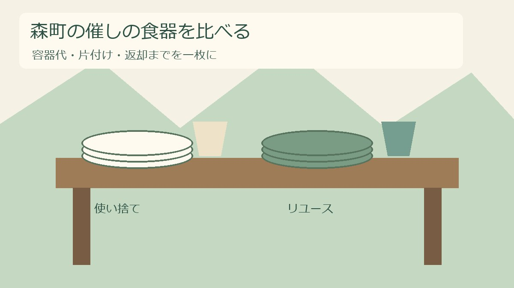
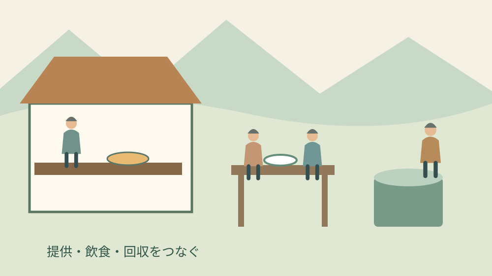
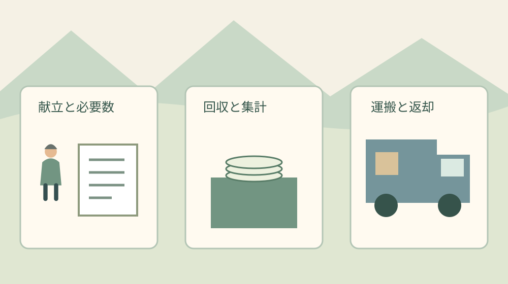

森町の催しの食器｜使い捨てと再使用を比較

Q. 地域の催しの食器は、使い捨てとリユースのどちらがいい？
使い捨てとリユースの食器は、容器代だけでなく運搬、回収、洗浄・返却の担当まで並べて比べます。大阪市の導入ガイドは比較項目の参考であり、森町の料金や貸出制度ではありません。今日の一歩は、出す料理と必要数、片付けに動ける人を書き出すことです。
祭りの飲食を支える方は、仕込みや販売が終わってからも帰れません。食べ残しを集め、容器を分け、机を拭き、積込みを終えてから自分の片付けに入る。その仕事を引き受ける人の時間を、食器選びの出発点に置きたいと思います。これは特定の森町の催しで私が見た場面の報告ではなく、運営を考える際の立場です。
大石浩之（磐田市／不動産業）です。私は、環境への配慮と運営の続けやすさを一緒に考えます。使い捨てを減らせても、返却を一人に任せきりにすれば次の年が苦しくなる。逆に、従来の容器を続ける場合でも、ごみを集めて運ぶ段取りは残ります。どちらにも終わりまでの仕事があります。
森町の秋の催しと、食器を選ぶ問い
森町公式の第39回森町産業祭の案内では、開催日は2026年11月22日です。会場は森町文化会館お祭り広場及び駐車場などとされています。2026年10月31日に公式ページを確認しました。秋の地域行事を準備する時期に、食器の手配と片付けの分担を考える接点があります。
ただし、本稿は産業祭でリユース食器が採用されるという案内ではありません。確認した開催案内から、指定容器、貸出、食器回収の運用は確認できませんでした。実際に出店する方は主催者の指示を優先してください。地区の小さな催しにも使える、食器を比較するための整理として書いています。
出店できる条件と、どの食器で提供するかは別の問いです。許可や届出の確認から始めたい場合は、祭りの出店と許可・届出を整理した記事も参照できます。食器を借りたことだけで、飲食の提供に必要な確認が終わるわけではありません。
大阪市の導入ガイドから拾う比較項目
大阪市は2026年10月23日付で、イベント主催者向けのリユース食器導入ガイドを公開しています。ガイドは数量と回収計画を準備し、貸出料金、搬入搬出、洗浄サービスを確認する流れを示しています。参照するのは作業を分ける考え方です。大阪市の資料を森町の貸出案内として扱いません。
同ガイドの費用負担の例は、レンタル、搬入搬出、回収運用、紛失・破損の補填を分けています。衛生面では、回収した食器を各店で洗って再使用しないよう注意があります。リユースという名称でも、その場で洗って何度も回せるとは限らない。この点は、必要数を決める前に押さえたい事実です。
ガイドには条件付きの費用例もありますが、本稿では森町での見積額に置き換えません。配送先や品目、数量、返却の条件が違えば、比較の前提も変わります。地元の見積りを受け取る際には、食器代だけでなく、洗浄と送料が含まれるかを一行ずつ確認する使い方が適しています。

使い捨てとリユースを、同じ仕事の範囲で比較する
食器の比較では、買う時点と借りる時点だけを並べないようにします。提供してから会場を明け渡すまで、さらに返却や精算までを一つの範囲にすると、負担の置き忘れを防げます。次の表は私が提案する比較用の整理で、特定事業者の料金表や森町の統一ルールではありません。
| 比べる仕事 | 使い捨て食器 | リユース食器 |
|---|---|---|
| 手配 | 購入数、予備、納品日を確認 | 貸出数、予約、受取日を確認 |
| 支払う費用 | 容器代、配送、ごみ処理など | レンタル、配送、洗浄、補填など |
| 会場の置き場 | 未使用品とごみを分ける | 未使用品と回収品を分ける |
| 終了後 | 分別、搬出、残った新品の管理 | 回収数確認、梱包、返却、精算 |
| 人の配置 | ごみ案内と片付けの担当 | 返却案内と集計・返送の担当 |
使い捨て食器の利点は、洗浄して次へ渡す工程を自分たちで持たずに済む点です。購入先と必要数を決めれば準備しやすい場合があります。一方で、食べ残しと容器が混ざった状態を誰が整理するか、閉会後にどこへ運ぶかは別に決める必要があります。捨てられる容器でも、捨てる仕事は消えません。
リユース食器は、回収して再び使う仕組みを選べる点が利点です。ただし、洗浄を委託できる契約でも、会場内の回収まで自動的に頼めるとは限りません。受取箱と返却箱の用意、食べ残しの扱い、返送する状態を発注前に聞く。契約に含まれる仕事と主催者に残る仕事を分けておきます。
価格を尋ねる際は、同じ献立、同じ提供数、同じ開催日を両案に渡します。片方だけ送料込み、もう片方は店頭引取りでは、表の合計が比較になりません。税込か、追加注文に対応できるか、雨天中止で費用が発生するかも確認欄に置きます。安い順に並べる前に、条件をそろえる作業が必要です。
良い点は、片付けの仕事が見えること
食器を比較する準備には、普段は目立たない片付けの役割を見える形にする良さがあります。大阪市のガイドも関係者の役割分担を示しています。私は、容器の変更そのものに加えて、販売担当と回収担当が事前に話せる機会を作る点を評価します。終了間際に初めて頼む仕事を減らせるからです。
リユースを検討すると、返却場所をどこに置くかが具体的な議題になります。私は入口から飲食席、出口へ歩く順に会場図を眺める方法を提案します。食べ終わった人が戻りやすい場所か、列が通路を塞がないかを見る。食器だけでなく、人の移動の整理にもつながる確認です。
使い捨てを選ぶ場合にも、この確認は役立ちます。ごみ箱を置くだけで終えず、満杯になった後の交換と仮置き場所まで決められるからです。私は、容器を替えなかった年でも、片付けの引継ぎが一つ進めば成果だと考えます。全体の変更を急ぐより、今年困っている仕事を具体的に減らしたい。
費用の担当を分けて書くことにも利点があります。出店者が容器を準備し、主催者が搬出を手配する場合、別々の財布で支払っていても催し全体では費用が生じています。比較表には支払額の横へ支払う人を添えます。誰かの持出しをゼロ円として扱わなければ、来年の相談も始めやすくなります。
注文したい点は、回収担当を曖昧にしないこと
リユースの導入を決める際には、回収の担当者と交代時間も一緒に決めたいと私は考えます。借りる数量だけ先に確定すると、返却場所の見守りや閉会後の集計が後回しになります。容器の単価より、返却まで回せる段取りで選ぶ。これが今回の私の判断です。
私は、案内を増やせば担当者の説明が減るのか、それとも準備の負担を増やすのか迷います。小さな会場なら、複雑な表示を作るより、受渡しで短く伝える方が合うかもしれません。人数や配置を見ずに答えは決められません。まず担当者に、迷う人が出そうな場所を一つ挙げてもらうことを提案します。
預り金を使う方式を選ぶ場合は、食器の返却に加えて返金の仕事が生まれます。導入するなら、受取と返金の担当、現金の保管、閉会時の締め方を別に決めます。預り金を採用すれば必ず回収がうまくいくとは断定しません。会計を担う方が対応できるかを、仕組みの魅力より先に確認します。
紛失や破損についても、会場全体の責任なのか、出店者別に数を合わせるのかで集計が変わります。借りる側の独自判断で補填額を決めず、契約の条件を確認します。担当者が休んでも分かるよう、貸出窓口、借りた種類と数、返却期限を同じ用紙に記録するのが私の提案です。
催しを支える人の負担を広く考える際は、森町産業祭を支える側の段取りの記事につなげて読めます。本稿では食器の選択に絞っています。舞台、駐車場、販売など別の仕事と兼ねる人がいるなら、その人を回収の人数に二重に数えないようにします。
必要数は、来場者数より献立から書き出す
食器の必要数を考える第一歩は、料理と提供予定数を対応させることです。私は、来場者の総数だけから容器を一括発注せず、汁物、皿料理、飲み物を分ける整理を提案します。一人が複数の店で買う場合もあれば、食べずに帰る場合もあります。来場者数と容器数は同じ数字とは限りません。
例えば、計画上の仮定として汁物を200食、飲み物を300杯用意するなら、まず椀200個とカップ300個を別の欄に書きます。この数字は森町の行事の実績でも、推奨発注数でもありません。必要数を料理別に考えるための例です。予備を何個足すかは、欠品時の対応や追加手配の条件を確認して決めます。
品目を決める時は、容量だけでなく料理との適合を貸出先や購入先へ確認します。熱い汁を入れるのか、持ち歩くのか、蓋が必要かで条件が変わるためです。一般的な素材の耐熱数値を、そのまま手配する製品の保証と扱いません。実際の商品説明と、主催者が認める提供方法を照合します。
貸出数を節約するため、回収品を会場で洗って再投入する計画は立てません。大阪市のガイドに示された注意を踏まえ、返却品と未使用品の置き場を分けます。洗浄や保管の扱いは貸出先の条件に従い、飲食提供の個別判断は担当窓口へ確認します。水道があることと、自由に洗って使えることは別です。

回収箱から返却車両までを、一本の経路にする
食器の回収計画は、来場者が返す場所だけで完結しません。回収箱を一時保管する場所、箱を運ぶ道、車へ積む場所までつないで確認します。私は、会場図に矢印を引く方法を提案します。階段や狭い通路があれば、箱の重さや台車の利用を含めて担当者と相談できます。
返却場所では、残った飲み物や食べ物をどう扱うかを先に決めます。回収箱へ何でも入れてよいのか、別の受け口が必要なのかは貸出条件を確認します。現場で担当者が一つずつ判断しなくて済むよう、来場者へ伝える短い言葉をそろえます。表示の正しさだけでなく、受け入れる器や場所も準備します。
会場に空いた部屋があるからといって、回収品を自由に置けるとは限りません。予約範囲や利用条件を管理者へ確認します。文化会館周辺の催しなら、森町文化会館の利用確認を整理した記事も参考になります。借りた会場の境界と、食器を置く範囲を合わせておきます。
搬出が翌日になる契約なら、閉会後の保管を誰が引き受けるかも決めます。自家用車へ載せる案なら、箱の寸法や汚れへの対応を確認してから頼みます。私は、車を出せる人がいるというだけで運搬済みの計画にしないよう勧めます。積める量と返却先の受付時間が合って初めて、運ぶ段取りになります。
使い捨てを選ぶ場合も、ごみの出口を確かめる
森町公式の「一般廃棄物収集運搬許可業者」ページは、町の許可を受けた事業者一覧を公開しています。事業系一般廃棄物などの処分時に参考にする資料です。2024年12月24日更新のページを2026年10月31日に確認しました。食器の購入先とは別に、廃棄物の相談先を確認する入口になります。
催しのごみをどの区分で処理するか、どこへ搬入できるかは、容器の見た目だけで決めません。行事の形態、排出者、内容を伝えて、主催者や生活環境係へ確認する必要があります。本稿は個別の処理区分を判断するものではありません。家庭用の収集日や置き場を、そのまま使えると想定しない準備ができます。
ごみの見積りを頼む時は、容器だけでなく食べ残しや飲み残しも出ることを伝えます。収集を頼める範囲、分け方、袋や箱、回収時刻を確認するためです。私は、食器の請求書とごみの請求書を一枚の比較表へ転記する方法を勧めます。購入価格だけを見て選んだ時の見落としを拾えます。
対案・結論は、小さく試せる範囲を決めること
催しの食器を一度に全部変更する必要はありません。主催者と貸出先が認めるなら、一つの飲食場所や一種類の食器から試す案があります。これは私の提案で、森町の行事で採用された事実ではありません。範囲を絞る場合も、使い捨てと返却品が混ざらない案内ができるかを確認します。
試行の評価は、借りた数と返した数だけで終わらせないようにします。誰が何時まで作業したか、説明が必要だった場所、箱を動かした回数、想定外に支払った費目を残す。翌年の担当者には、成功という一語より、具体的な条件が役立ちます。記録する項目は、担当者が無理なく残せる量に絞ります。
今日できる小さな一歩は、紙一枚に「料理・必要数・片付け担当」の三つの欄を作ることです。まだ容器を発注しなくても構いません。人数が空欄なら、先に分担を相談する。数量が空欄なら、出店者に提供予定を聞く。空欄を見つけることで、次に誰へ連絡するかが決まります。
大石の視点――単価より、引き渡せる段取りを見る
私は不動産の仕事でも、費用の総額と、誰がいつ動くかを一緒に考えます。食器の選択も、見積書の一番小さな金額だけでは決められません。回収品を置く場所、通れる経路、車を出す人、鍵を返す時刻までつながっているか。ここに、地域の催しと場所を扱う実務の共通点があります。
私は、負担が見えないまま「良いことだから」と引き受ける形には慎重です。これは特定の相談で実際に言った話ではなく、私の意見です。担い手の善意を予定表の空欄に押し込めない。容器の選択を保留してでも、返却まで引き継げる一枚を残す方が、来年の人に役立つと考えています。
使い捨てを続ける判断にも、リユースを試す判断にも理由があります。必要数と費用、回収を担う時間がそろったところで選べばよい。今日決めるのは素材の優劣ではなく、まだ確認できていない一項目です。森町の催しを支えてきた方の仕事を、次の担当者にも渡せる形にすることを目指します。
よくある質問
リユース食器の方が必ず安くなりますか？
必ず安くなるとは確認できません。比較には食器の費用だけでなく、搬入搬出、回収の備品や人手、洗浄、紛失や破損の補填も含めます。使い捨ての場合も、ごみの搬出や処理にかかる費用を確認します。同じ献立と提供数で条件をそろえ、森町への配送と返却を含む見積りを取り、担当できる時間と合わせて判断してください。
返ってきた食器を、その場で洗って使えますか？
大阪市の導入ガイドは、回収した食器を各店で洗って再使用しないよう注意しています。リユースだから会場で自由に洗って回せるとは考えず、貸出先の洗浄・返却条件を確認してください。未使用品と回収品を分けて置き、飲食提供に必要な個別の衛生判断は担当窓口へ相談します。水道があるだけでは使用可否を決められません。
森町で借りられる食器や補助はありますか？
今回確認した資料だけでは、森町の食器貸出制度や補助、地元の貸出価格は確認できません。大阪市のガイドは比較項目を知る参考資料です。催しの主催者に指定容器や回収方法を確認したうえで、貸出先には森町への配送、数量、洗浄、返却期限を伝えて相談してください。未確認の制度を利用できる前提で予算を組まないようにします。
出典・確認日
- 大阪市：リユース食器 導入ガイド（2026年10月31日確認）
- 森町：第39回森町産業祭（2026年10月31日確認）
- 森町：一般廃棄物収集運搬許可業者（2026年10月31日確認）
催しの予定や料金・制度は変更される場合があります。個別の利用条件は主催者へ、専門的な判断が必要な事項は適切な専門家へご相談ください。